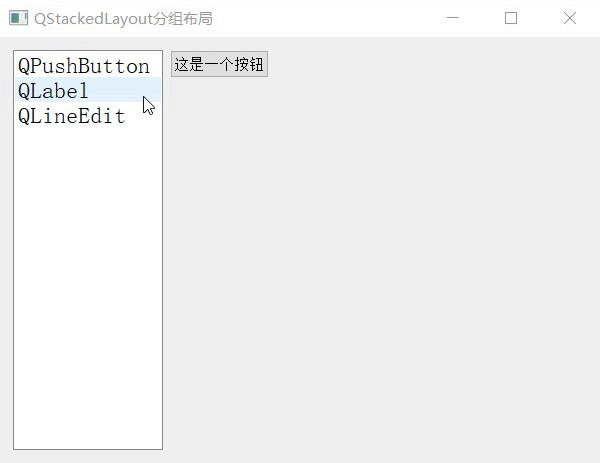

首页 > 编程笔记
Qt QStackedLayout布局用法详解
QStackedLayout 是 Qt 提供的一种布局工具（或者理解为一种布局控件），它可以容纳多个控件或者窗口，但每次只能显示一个控件或窗口。
举个简单的例子，图 1 中就用到了 QStackedLayout 布局控件：
整个窗口被一分为二，左侧是 QListWidget 列表控件，右侧是 QStackedLayout 布局控件。QStackedLayout 中包含 QPushButonn、QLabel 和 QLineEdit 这 3 个控件，但每次只显示一个。
下表罗列了操作 QStackedLayout 对象常用的一些成员方法：
这里我们以图 1 所示的窗口为例，实现代码如下：
举个简单的例子，图 1 中就用到了 QStackedLayout 布局控件：

图 1 QStackedLayout分组控件
图 1 QStackedLayout分组控件
整个窗口被一分为二，左侧是 QListWidget 列表控件，右侧是 QStackedLayout 布局控件。QStackedLayout 中包含 QPushButonn、QLabel 和 QLineEdit 这 3 个控件，但每次只显示一个。
使用 QStackedLayout 布局控件之前，程序中要先引入注意，QStackedLayout 自身无法切换当前显示的控件或窗口，实际应用时通常和 QListWidget 或者 QComboBox 搭配使用。
<QStackedLayout>头文件。 每个 QStackedLayout 控件都是 QStackedLayout 类的一个实例对象，该类提供有 3 个构造函数，分别是：QStackedLayout() QStackedLayout(QWidget *parent) QStackedLayout(QLayout *parentLayout)借助第二个构造函数，可以将 QStackedLayout 添加到指定的 parent 窗口中；借助第三个构造函数，可以将 QStackedLayout 嵌入到指定的 parentLayout 布局控件中（布局控件是可以嵌套使用的）。
下表罗列了操作 QStackedLayout 对象常用的一些成员方法：
| 成员方法 | 功 能 |
|---|---|
| int QStackedLayout::addWidget(QWidget *widget) | 将 widget 控件添加到 QStackedLayout 控件中。 |
| int QStackedLayout::insertWidget(int index, QWidget *widget) | 将 widget 控件插入到 QStackedLayout 控件指定的位置处。 |
| 信号函数 | 功 能 |
| void QStackedLayout::currentChanged(int index) | 切换当前显示的控件时，会触发此信号，index 为显示的新控件的索引。 |
| void QStackedLayout::widgetRemoved(int index) | 移除某个控件时，会触发此信号，index 为被移除控件的索引。 |
| 槽函数 | 功 能 |
| void setCurrentIndex(int index) | 将第 index 个控件作为要显示的控件。 |
| void QStackedLayout::setCurrentWidget(QWidget *widget) | 设置 widget 作为当前要实现的控件。注意，必须保证 widget 存储在 QStackedLayout 控件中。 |
这里我们以图 1 所示的窗口为例，实现代码如下：
#include <QApplication>
#include <QWidget>
#include <QPushButton>
#include <QLabel>
#include <QLineEdit>
#include <QStackedLayout>
#include <QListWidget>
#include <QHBoxLayout>
int main(int argc, char *argv[])
{
QApplication a(argc, argv);
//创建主窗口
QWidget widget;
widget.setWindowTitle("QStackedLayout分组布局");
widget.resize(600,400);
//向主窗口中添加一个水平布局控件
QHBoxLayout *layout=new QHBoxLayout;
//创建一个列表
QListWidget listWidget(&widget);
listWidget.setMinimumWidth(150);
listWidget.setFont(QFont("宋体",14));
listWidget.addItem("QPushButton");
listWidget.addItem("QLabel");
listWidget.addItem("QLineEdit");
//新建 3 个窗口，分别放置文本框、按钮和单行输入框
QWidget widget1;
widget1.setMinimumSize(400,400);
QPushButton but1("这是一个按钮",&widget1);
QWidget widget2;
widget2.setMinimumSize(400,400);
QLabel lab1("这是一个文本框",&widget2);
QWidget widget3;
widget3.setMinimumSize(400,400);
QLineEdit edit("这是一个单行输入框",&widget3);
//创建一个分组布局，将 3 个窗口添加到分组控件中
QStackedLayout *stackedLayout = new QStackedLayout;
stackedLayout->addWidget(&widget1);
stackedLayout->addWidget(&widget2);
stackedLayout->addWidget(&widget3);
//layout 第一列添加 QListWidget 控件，第二列添加分组布局控件，设置它们的伸缩系数比为 1:4
layout->addWidget(&listWidget,1);
layout->addLayout(stackedLayout,4);
//将 layout 水平布局控件添加到 widget 窗口中
widget.setLayout(layout);
widget.show();
//连接信号和槽，实现当点击列表中的某一项，切换分组布局管理器显示的控件
QObject::connect(&listWidget,&QListWidget::currentRowChanged,stackedLayout,&QStackedLayout::setCurrentIndex);
return a.exec();
}
关注公众号「站长严长生」，在手机上阅读所有教程，随时随地都能学习。内含一款搜索神器，免费下载全网书籍和视频。

微信扫码关注公众号